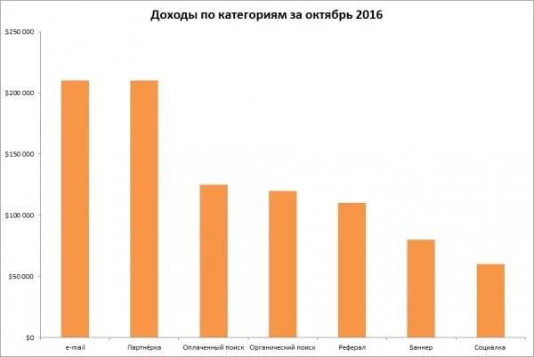

History of the specialty
The profession of a web developer is akin to the activity of a builder - he builds the space around us, brick by brick, only digital, but millions of people also live in it, daily using electronic products - websites and mobile applications that appear thanks to the work of thousands of web developers.
The first steps in building a global computer network were taken in the 1960s, and in 1969 there was a "premiere" session between two remote subscribers. In the following decades, the Internet was used by a small number of narrow specialists. The situation changed dramatically in the early 1990s, when personal computers came into use, and universal access to the World Wide Web was provided by browsers with a good interface (e.g. NCSA Mosaic).
Only a quarter of a century has passed since then, and the Internet is already used by more than half of the world's population. The World Wide Web has penetrated into all areas of human activity, it is indispensable in the financial sector, services, communications, etc. Professions related to information technology have arisen en masse, one of the most scarce among them - a programmer of network resources. So, who is a web developer (or developer). This is a qualified specialist who, using different programming languages, writes, updates, fixes and improves the algorithms for all kinds of desktop and mobile applications, websites. Such activity develops the Internet industry and makes digital products as user-friendly as possible.
The trend in web development
There are three areas of web development
- frontend- A specialist who works on the visual side of the site. He translates the design project into code so that the external side of the site functions correctly and the correct images are displayed everywhere.
- backend – Specialist who works with the internal parts of the site: writes code in different languages, is responsible for the smooth operation of the site, the organization of technical processes and the database.
- fullstack- A professional who knows how to perform the tasks of a backend and frontend developer. Such masters are very few, because it is very difficult to master the whole range of tasks.
Frontend Developer Skills and Skills
SOFT SKILLS
- communication skills and the ability to properly understand the customer's intent;
- attention, patience and assiduity;
- psychological resilience, especially in the case of failure;
- Readiness for teamwork;
- the ability to tolerate mental overload;
HARD SKILLS
- Writing and reading HTML, CSS, JavaScript/TypeScript.
- Create interfaces in Angular, Vue, React (depends on what the company uses).
- Understand preprocessors CSS — Sass, Less, PostCSS.
- At least write a little unit-тесты.
- Work with grids Bootstrap и Grid Layout.
Popular languages and technologies for frontend- development
HTML- standardized document markup language for viewing web pages in a browser. Web browsers retrieve an HTML document from a server via HTTP/HTTPS or open it from a local disk, then interpret the code into an interface that will be displayed on a monitor screen.
CSS- a formal language for describing the appearance of a document (web page) written using a markup language.
React- JavaScript- An open-source library for developing user interfaces. It can be used to develop single-page and mobile applications. Its goal is to provide high speed, simplicity, and scalability.
JavaScript- Multi-paradigm programming language. Supports object-oriented, imperative, and functional styles. Typically used as an embeddable language for programmatic access to application objects. It is most widely used in browsers as a scripting language to add interactivity to web pages.
PHP- A general-purpose, heavily used language for web application development. Currently supported by the vast majority of hosting providers and is one of the leaders among languages used to create dynamic websites.
Pros and cons of the profession
PLUSES
- demand in the labor market;
- creative work, as each task is unique, and there are several ways to solve it;
- the possibility of combining with studies;
- It is not always necessary to have a diploma;
- Freedom to make decisions (how to solve this or that problem, decides the web-programmer);
MINUSES
- It is necessary to constantly learn, because everything quickly becomes outdated - this is a disadvantage only for those who do not like to learn.
- Sometimes you have to work "on the table" and redo it, as the requirements change on the fly.
Levels of Specialists
Junior Developer — yesterday's student or even a high school student with a random set of basic skills that we thought was enough to give a person a chance. Ready to listen to criticism and learn a lot.
Middle Developer — yesterday's Junior, who has successfully mastered the entire technology stack used by the team. He is no longer intimidated by the command line and Git. He confidently, independently and on time solves small tasks/bugs. Makes helpful comments when reviewing other people's code.
Senior Developer — a mentor, an evangelist. He can be tasked with a new product or direction. He is already in charge of a division (teamlead) or is a very cool developer (techlead). A partner of the company. He understands for whom a particular product is made. Who, what and how should do.
| Direction | Junior | Middle | Senior |
| full-stack | 5005 | 7000 | 22000 |
| back-end | 3500 | 4240 | 6600 |
| front-end | 6444 | 6900 | 13000 |
Prospects for the profession
A web developer creates new sites and maintains old ones. To get started, the specialist needs to talk to the customer to determine what he or she needs. The web developer receives the layout from the web designer.
After receiving the work, the specialist decides how to implement the task. Then he writes the code, tests it, creates customizations, and does the interface. Programming and layout skills are used in the work. Also frameworks and databases are used.